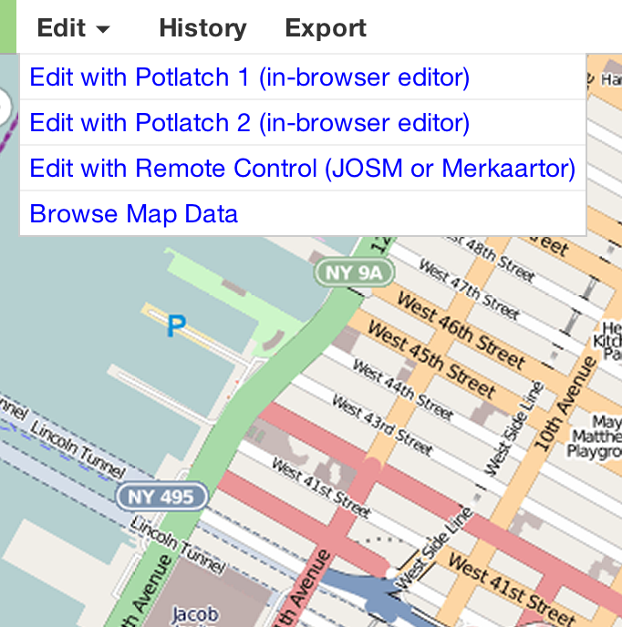
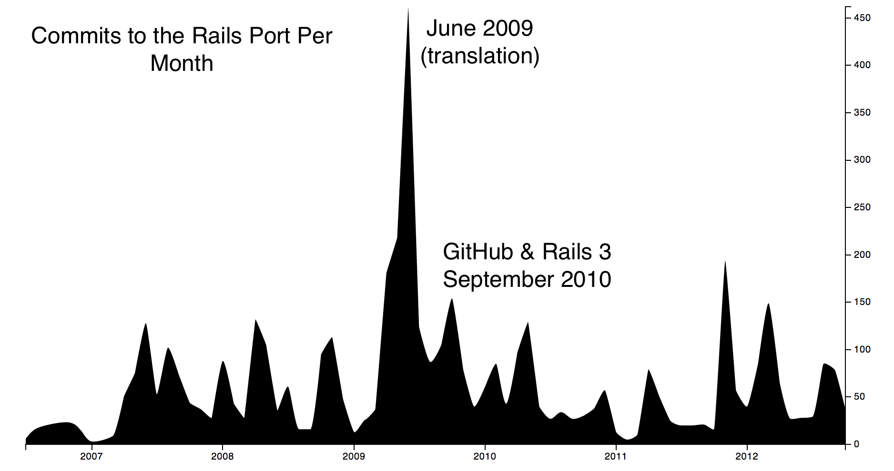
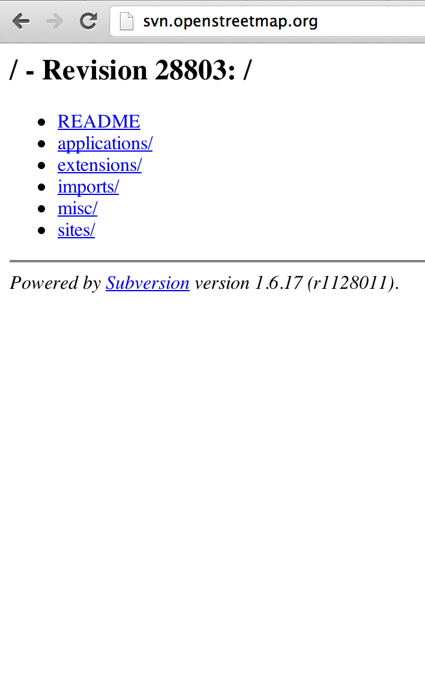
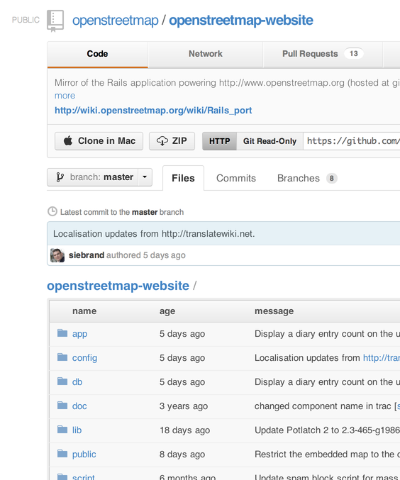
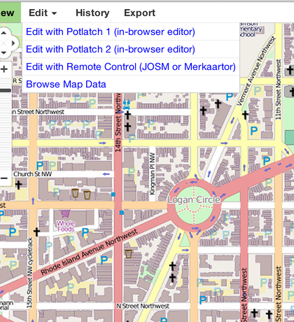
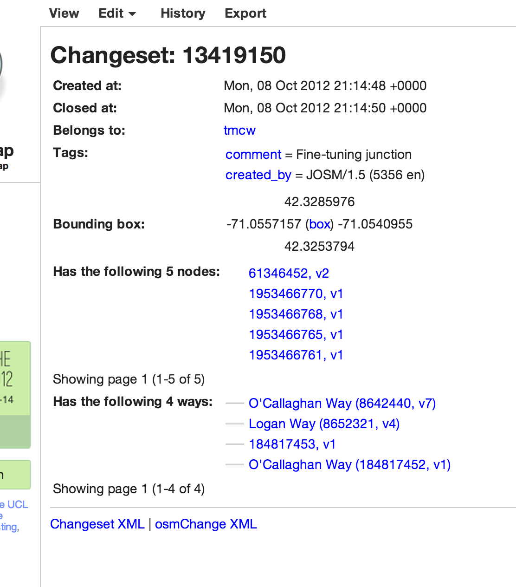
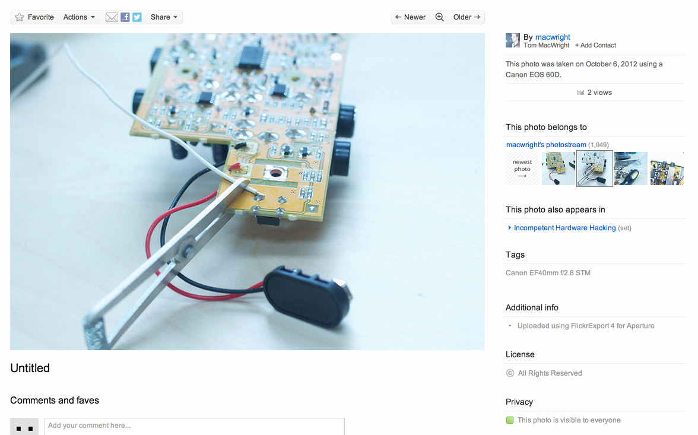
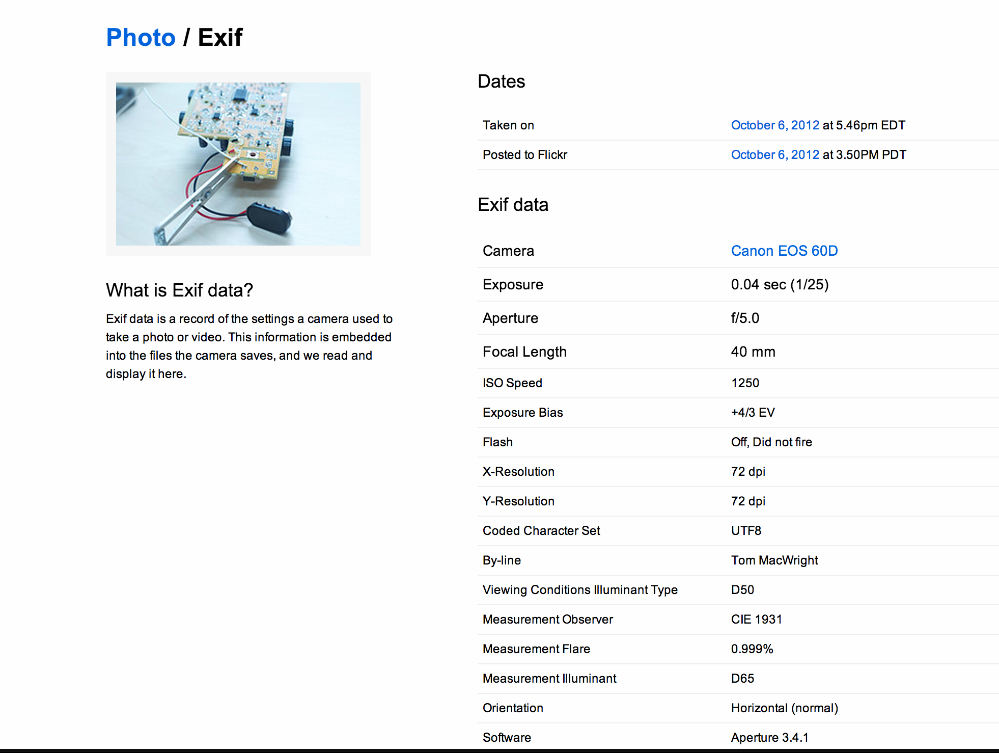
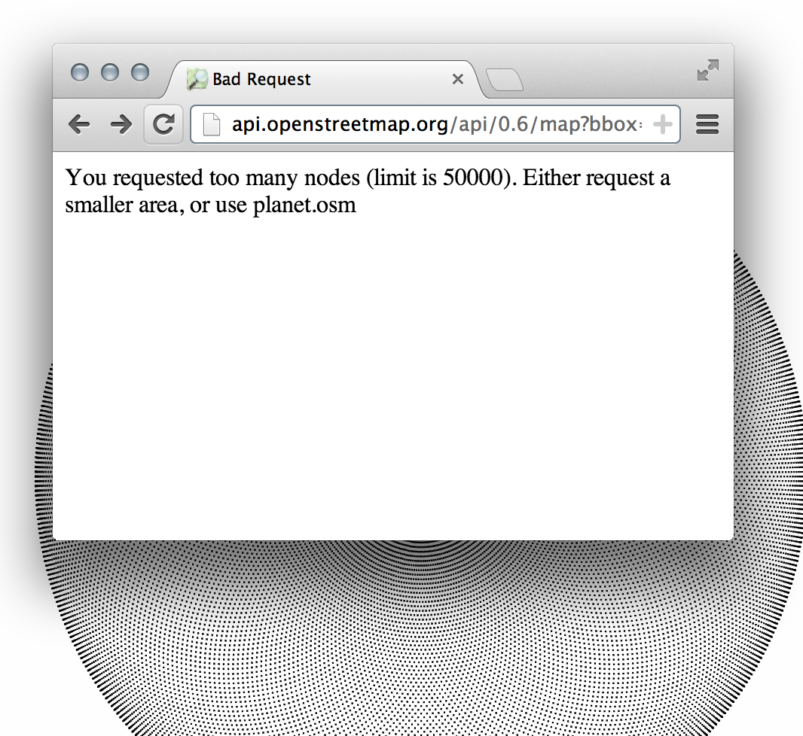
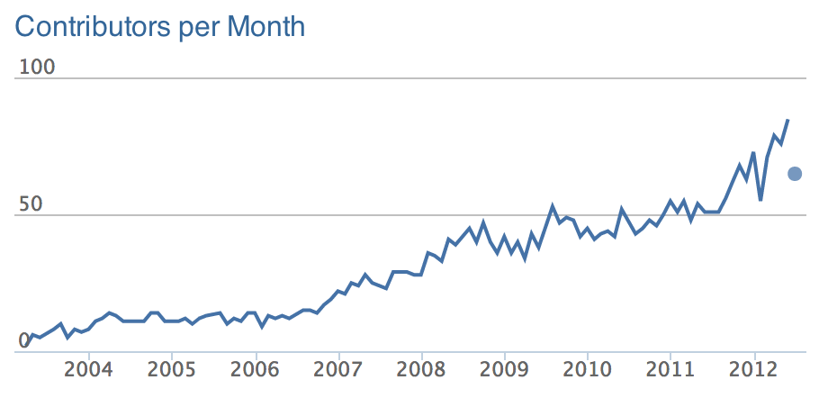

OpenStreetMap Technology Now & Future
/Tom MacWright
bit.ly/sotmus
123421 gpslib-ru doroga tv Lost GPX Traces sc_auto_import norcTracks GPSies_com -jha- yasu747 AkMeR sprok RomaniaTracks mfvl MAXimall OldIvantey Johnny Carlsen Eugene120 Nikolya Roman_GRE Andrey Tolstoy AHTOH osm-belarus Ben Alban DevineMe dolphinpix Chip Chef chnav RodrigoMoya Gregory Williams *Martin* blaz John68 Petter Reinholdtsen blackadder docsam malenki amck sonk Teddy73 VK1RE RandalSchwartz Tallguy MichaelCollinson AlexAR Nahainec kao Toi Aleksey Ovchinnikov alex-map NLCanvec NLCanvec NLCanvec CorineBH CorineBH CorineBH azub mcheckimport czechreg Pierre Gagné Pierre Gagné mcheckimport TexasNHD azub CanvecImports DarkSwan_Import CanvecImports sammuell_imports u_kubota TexasNHD TexasNHD Hjart osapon osapon drijvis azubimport Pierre Gagné yamasan DarkSwan_Import bdustan IENC-Import nodekiller alenmahovic Felis Pimeja drijvis Константин Коцев geodreieck4711 sammuell_imports Heinz_V slpt doocky soranokawa_import pnorman_reverts soranokawa azub Ycarus Heinz_V Plop76_imports Heinz_V hotelsierra
95%
5%

Software
Functional Software
WHAT IT IS
- The Rails Port
- Ruby on Rails
- PostgreSQL
- The Map
- OpenLayers
- Mapnik

- Potlatch 1-2 Flash
- JOSM Java
- Merkaator C++
OSM is a lot of stuff
From: Steve Coast steve@asklater.com
Date: Fri, 28 Jul 2006 21:41:39 +0000 (+0000)
Subject: beginning of osm on rails
X-Git-Tag: live~3349
X-Git-Url: http://git.openstreetmap.org
beginning of osm on rails

(2 minute history*) for most of this i wasn't there
Osmarender » Mapnik
the winningest renderer
OpenStreetMap MapQuest Stamen MapBox
SVN » GitHub


github.com/ openstreetmap/ openstreetmap-website
Rails 2 » Rails 3
rakefiles and whatever » Bundler
Easier to set up!
API 0.6
(everyone knows about that)
Translatable

WHOAH
نجاح باهر
'The Website'

MOCKUPS
"Design" = Wart Removal

"Reading Your Messages"
Hey Mom I Edited A Road
*is not mutually exclusive with design for nerds


OpenStreetMap is like Google Maps Except The API Gives You Data
 THIS IS INCREDIBLE
THIS IS INCREDIBLE
NOOOO
// none of this exists yet
var osmapi = OSM();
if (!osmapi.user()) {
osmapi.authenticate();
}
// none of this exists yet
getLocation(function(location) {
map.addLayer(
osmapi.load(location, {
nodes: true
})
);
});

None of this exists yet
'
hacks'
are possible already.
we just need to make them less scary / more reliable
THE FUTURE

Part one: tear it all down!
No
(ruby will probably stay)
(mapnik will probably stay)
(mapnik will probably stay)
OpenLayers (will probably) → Leaflet
Everything gets better
Part two: the people's revolution
MediaWiki
Community Glue
- Nice People
- Goals
- Learning curve
Nice people
thx TomH for the code reviews!
Tests
thx jfire for the JS testing progress!
Goals
- wishlist
- top 10 tasks
- ewg
- blog posts
Learning curve
- Bundler
- IRC & GitHub
- Vagrant
- Docs
- Staging Servers
bit.ly/sotmus
thanks
@tmcw
tom@mapbox.com